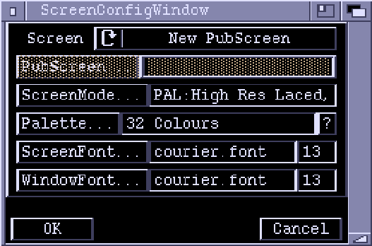

Screen Settings

This window lets you set up the screen mode, fonts and palette used in Zonk. Usually, you will want to run Zonk on its own screen using a palette appropriate to the game you are working on, but there is provision for opening Zonk on an existing public screen. The settings in this window do not take effect until the "OK" button is pressed.
Screen
A cycle gadget to say if Zonk should open on its own screen, an existing
public screen or on the default public screen.
PubScreen
If "Screen" is set to 'Existing PubScreen' then the name of the screen can
be selected here.
ScreenMode
If "Screen" is set to 'New PubScreen' then Zonk will open up a screen of
its own with the screenmode specified here.
"Palette
This lets you set a palette for Zonks screen. The "Palette..." button lets
you import a Palette using a file requester. The "?" button lets you import
a palette from an already-loaded Palette chunk (as displayed in the
ChunkWindow). Usually you would want to use the palette from the game level
you are working on.
ScreenFont
This font is used as the default for Zonks Screen. It will appear in the
Screen title bar and window title bars. If Zonk doesn't open its own screen
this field is not used.
WindowFont
This font is used for the contents of all Zonk windows.